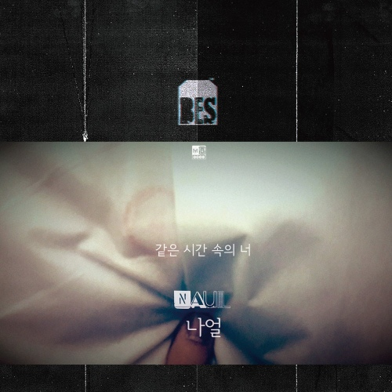

안녕하세요 라보엠입니다.
오늘은 나얼의 같은 시간 속의 너 노래를 소개해드리겠습니다. 이 노래는 나얼이 속해 있는 그룹 브라운아이드소울의 각 멤버의 솔로 프로젝트로 나온 노래중 나얼의 싱글입니다. 이 노래를 필두로, 정엽, 영준, 성훈의 솔로 싱글 앨범들도 발매되었습니다. 뮤직비디오에 유승호가 출연하여 더는 같은 시간 속에 있을 수 없는 헤어진 연인에 대한 슬픔을 담아냈습니다.
같은 시간 속의 너 Release Note
브라운아이드소울 싱글 프로젝트의 시작
나얼 솔로 첫 싱글 같은 시간 속의 너
나얼의 가창력에 별다른 설명과 수식어가 필요할까? ‘와 노래 정말 잘한다.’라고 느끼는 순간 한 옥타브를 올려서 카타르시스를 배가시키는 그의 가창에는 이견을 찾기 어렵다. 하지만 소울의 원형과 아날로그를 좇는 나얼의 음악 행보는 앨범의 가치를 높이지만 동시에 다수 대중에게 낯선 음악으로 인식될 수 있다. 이런 점에서 그가 자신의 이름을 걸고 처음 발표한 싱글 ‘같은 시간 속의 너’는 시사점이 명확해 보인다. 싱글의 특징을 잘 살려낸 이른바 나얼의 대중음악이다. 싱글이라는 새로운 접근을 통해서 대중의 기호와 본인의 기호를 동시에 만족시키겠다는 의도가 아니었을까?
나얼의 이번 싱글은 브라운아이드소울 싱글 프로젝트의 시작이다. 나얼의 싱글을 필두로 정엽, 영준, 성훈의 솔로 싱글들이 이어질 예정. 브라운아이드소울 활동은 물론 모두 솔로 앨범들을 성공시키며 검증 받은 싱어송라이터로서의 역량이 이번 싱글 프로젝트에서도 기대를 불러 모은다. 나얼의 이번 싱글 같은 시간 속의 너 역시 본인이 직접 만들고 직접 노래했다.
같은 시간 속의 너 가사
꼭 그러지 않아도
충분히 널 이해할 수 있어
다른 사람 곁에 서 있는 니 모습이
조금 어색하지만
다 버리지 않아도
어떻게든 이겨낼 수 있어
다른 사랑 찾아가버린 니 얼굴이
그렇게 밉진 않아
이제 우리 같은 시간 속을 남처럼
그렇게 걸으면 돼
달아나도 가지 못할 기억 안고
아무말도 하지마요
더는 안된다는거 잘 알아요
많은 날들이 아무 의미 없진 않겠죠
멀어지는 바람처럼
우리 함께한 기억들을 꿈처럼
그렇게 안으면 돼
눈 감아도 잊지 못할 추억의 널 묻고
아무말도 하지마요
더는 안된다는거 잘 알아요
사랑했던 날 모두 사라지진 않겠죠
우릴 스치는 안개처럼
아무것도 묻지 않을게요
이대로 묻어둘래요 나는요
거짓말처럼 또 하루가 살아지겠죠
떨어지는 같은 시간 속의 너

연관 포스팅
[지금이노래] 나얼 기억의 빈자리 가사
안녕하세요 한스입니다. 2024년도 벌써 2일차입니다. 새해도 잘 시작하고 있으시죠? 계획한 모든 일이 잘 풀리시길 바랍니다. 오늘은 2017년 발매된 나얼의 2번째 정규앨범 발매전 싱글로 먼저 발
haanslist.tistory.com
[지금이노래] 성시경 X 나얼 잠시라도 우리 가사
안녕하세요 한스입니다. 한국의 남자 가수중 좋은 목소리를 가진 가수를 꼽아보자면, 성시경 나얼이 아닐까 싶습니다. 이 두 사람이 함께 노래를 부르면 어떻게 될까요? 2023년 가요계에 한 획을
haanslist.tistory.com
[지금이노래] 나얼 걸음을 멈추는 날 가사
안녕하세요 한스입니다. 나얼의 목소리는 언제 들어도 애절합니다. 오늘은 나얼의 발라드 팝시티 프로젝트의 세번째 싱글인 걸음을 멈추는 날을 소개해드리겠습니다. 첫번째 싱글은 성시경의
haanslist.tistory.com